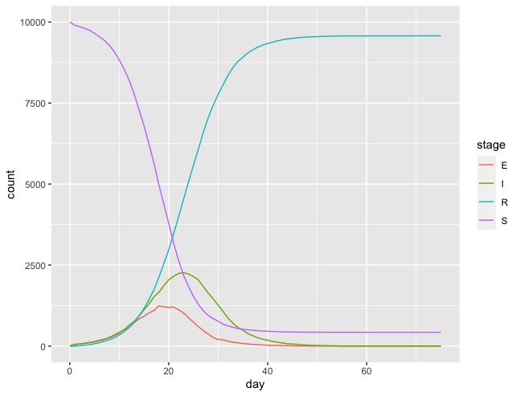

Getting Started in R¶
Prerequisites¶
Make sure you have installed and imported tidyverse, e.g. via;
> install.packages("tidyverse")
> library(tidyverse)
Importing metawards¶
First, you need to get the list of R commands you will need to type
to import the metawards module into R. You can print these commands
by opening the console (also called the terminal or command prompt)
and typing;
metawards-reticulate
and then pressing return. This should print the commands to the screen, e.g. for me I see;
Start R or RStudio.
If you haven't installed 'reticulate' then type at the prompt:
> install.packages("reticulate")
Once this has been installed you should now import reticulate via;
> library("reticulate")
Next, tell R where this Python executable is located via;
> use_python("/Users/chris/miniconda3/bin/python", required = TRUE)
Finally, import the metawards module using;
> metawards <- import("metawards")
You can now use metawards, e.g. via;
> metawards$run(model="single", additional=5)
(note that your output will be different)
Follow these instructions to start R or RStudio and import metawards.
Note
We plan to create and upload a metawards R module to CRAN for the next
version of MetaWards (1.4). This will make it much easier to download
and import the metawards R module.
Creating the disease¶
You should now be in R (or RStudio) and have imported metawards.
To run a simulation you need to define the Disease
that you want to model. MetaWards implements a SEIR-style model, but
you have complete control to define as many (or few) stages as you wish.
First, we will create a disease, which we will call lurgy, that
will consist of four stages: S, E, I and R. To do this, let’s create
the disease;
> lurgy <- metawards$Disease(name="lurgy")
Next, we will add each stage. You don’t define the “S” stage, as the model starts with a set of susceptible individuals by default. Instead, we need to add in the E, I and R stages.
First, lets add the latent (“E”) stage. Latent individuals are not
infectious, and so we will set beta (the infectivity parameter) to 0.0.
Individuals will progress quickly through this stage, so we will set
progress to 0.5, meaning that 50% of individuals move to
the next stage each day.
> lurgy$add("E", beta=0.0, progress=0.5)
Next we will add the infectious (“I”) stage. This will have a high beta
value (0.8), but a lower progress (0.25) as we will model this as a
disease with a long symptomatic period.
> lurgy$add("I", beta=0.8, progress=0.25)
Finally, we need to add the recovered (“R”) stage. We don’t need to set the
beta or progress values, as MetaWards will automatically recognise
this as the recovered state, and will set beta to 0 and progress
to 0 automatically.
> lurgy$add("R")
You can should print this disease to the screen to confirm that everything has been correctly set.
> print(lurgy)
* Disease: lurgy
* stage: ['E', 'I', 'R']
* mapping: ['E', 'I', 'R']
* beta: [0, 0.8, 0]
* progress: [0.5, 0.25, 0]
* too_ill_to_move: [0, 0, 0]
* start_symptom: 2
Note
You can save this disease to a file using
lurgy$to_json("lurgy.json.bz2"), and then load it back
using lurgy = metawards$Disease$from_json("lurgy.json.bz2")
Creating the wards (network)¶
Next, you need to define the wards (network) that will contain the individuals who will experience the model outbreak.
We will first start with a single ward, called home.
> home <- metawards$Ward(name="home")
MetaWards works by assigning individuals as either workers or players. The difference is that workers make fixed (predictable) movements between different wards each day, while players make random movements. Since we have just a single ward, we will start by populating it with 10,000 players.
> home$set_num_players(10000)
> print(home)
Ward( info=home, num_workers=0, num_players=10000 )
Note
You can save this Ward to a file using
home$to_json("home.json.bz2"), and then load it back
using home = metawards$Ward$from_json("home.json.bz2")
Running the model¶
Now we have a disease and a network, we can now model an outbreak. To do this,
we will use the metawards.run() function.
> results <- metawards$run(model=home, disease=lurgy)
This will print a lot to the screen. The key lines are these;
━━━━━━━━━━━━━━━━━━━━━━━━━━━━━━━━━━━━ Day 0 ━━━━━━━━━━━━━━━━━━━━━━━━━━━━━━━━━━━━━
S: 10000 E: 0 I: 0 R: 0 IW: 0 POPULATION: 10000
━━━━━━━━━━━━━━━━━━━━━━━━━━━━━━━━━━━━ Day 1 ━━━━━━━━━━━━━━━━━━━━━━━━━━━━━━━━━━━━━
S: 10000 E: 0 I: 0 R: 0 IW: 0 POPULATION: 10000
Number of infections: 0
━━━━━━━━━━━━━━━━━━━━━━━━━━━━━━━━━━━━ Day 2 ━━━━━━━━━━━━━━━━━━━━━━━━━━━━━━━━━━━━━
S: 10000 E: 0 I: 0 R: 0 IW: 0 POPULATION: 10000
Number of infections: 0
━━━━━━━━━━━━━━━━━━━━━━━━━━━━━━━━━━━━ Day 3 ━━━━━━━━━━━━━━━━━━━━━━━━━━━━━━━━━━━━━
S: 10000 E: 0 I: 0 R: 0 IW: 0 POPULATION: 10000
Number of infections: 0
━━━━━━━━━━━━━━━━━━━━━━━━━━━━━━━━━━━━ Day 4 ━━━━━━━━━━━━━━━━━━━━━━━━━━━━━━━━━━━━━
S: 10000 E: 0 I: 0 R: 0 IW: 0 POPULATION: 10000
Number of infections: 0
━━━━━━━━━━━━━━━━━━━━━━━━━━━━━━━━━━━━ Day 5 ━━━━━━━━━━━━━━━━━━━━━━━━━━━━━━━━━━━━━
S: 10000 E: 0 I: 0 R: 0 IW: 0 POPULATION: 10000
Number of infections: 0
Ending on day 5
This shows the number of people in the different stages of the outbreak. In this case, there was no infection seeded, and so the number of infections remained zero.
Seeding the outbreak¶
We need to seed the outbreak with some additional seeds. We do this using
the additional option. This can be very powerful (e.g. adding seeds
at different days, different wards etc.), but at its simplest, it is
just the number of initial infections on the first day in the first
ward. We will start with 100 initial infections;
> results <- metawards$run(model=home, disease=lurgy, additional=100)
Now you get a lot more output, e.g. for me the outbreak runs for 75 days.
━━━━━━━━━━━━━━━━━━━━━━━━━━━━━━━━━━━━ Day 70 ━━━━━━━━━━━━━━━━━━━━━━━━━━━━━━━━━━━━
S: 423 E: 0 I: 1 R: 9576 IW: 0 POPULATION: 10000
Number of infections: 1
━━━━━━━━━━━━━━━━━━━━━━━━━━━━━━━━━━━━ Day 71 ━━━━━━━━━━━━━━━━━━━━━━━━━━━━━━━━━━━━
S: 423 E: 0 I: 1 R: 9576 IW: 0 POPULATION: 10000
Number of infections: 1
━━━━━━━━━━━━━━━━━━━━━━━━━━━━━━━━━━━━ Day 72 ━━━━━━━━━━━━━━━━━━━━━━━━━━━━━━━━━━━━
S: 423 E: 0 I: 1 R: 9576 IW: 0 POPULATION: 10000
Number of infections: 1
━━━━━━━━━━━━━━━━━━━━━━━━━━━━━━━━━━━━ Day 73 ━━━━━━━━━━━━━━━━━━━━━━━━━━━━━━━━━━━━
S: 423 E: 0 I: 1 R: 9576 IW: 0 POPULATION: 10000
Number of infections: 1
━━━━━━━━━━━━━━━━━━━━━━━━━━━━━━━━━━━━ Day 74 ━━━━━━━━━━━━━━━━━━━━━━━━━━━━━━━━━━━━
S: 423 E: 0 I: 1 R: 9576 IW: 0 POPULATION: 10000
Number of infections: 1
━━━━━━━━━━━━━━━━━━━━━━━━━━━━━━━━━━━━ Day 75 ━━━━━━━━━━━━━━━━━━━━━━━━━━━━━━━━━━━━
S: 423 E: 0 I: 0 R: 9577 IW: 0 POPULATION: 10000
Number of infections: 0
Ending on day 75
Visualising the results¶
The output results contains the filename of a csv file that contains
the S, E, I and R data (amongst other things). You can load and plot this
using standard R commands, e.g.
> results <- read.csv(results)
> print(results)
fingerprint repeat. day date S E I R IW SCALE_UV
1 REPEAT 1 0 2020-07-20 10000 0 0 0 0 1
2 REPEAT 1 1 2020-07-21 9900 57 43 0 1 1
3 REPEAT 1 2 2020-07-22 9859 66 66 9 1 1
4 REPEAT 1 3 2020-07-23 9807 86 82 25 1 1
5 REPEAT 1 4 2020-07-24 9747 101 112 40 1 1
6 REPEAT 1 5 2020-07-25 9654 140 130 76 1 1
7 REPEAT 1 6 2020-07-26 9548 183 165 104 1 1
8 REPEAT 1 7 2020-07-27 9433 215 203 149 1 1
9 REPEAT 1 8 2020-07-28 9280 252 269 199 1 1
10 REPEAT 1 9 2020-07-29 9082 318 341 259 1 1
...
To visualise the data we need to tidy it up so that we can group by S, E, I and R.
> results <- results %>%
pivot_longer(c("S", "E", "I", "R"),
names_to = "stage", values_to = "count")
> print(results)
# A tibble: 304 x 8
fingerprint repeat. day date IW SCALE_UV stage count
<chr> <int> <int> <chr> <int> <dbl> <chr> <int>
1 REPEAT 1 0 2020-07-20 0 1 S 10000
2 REPEAT 1 0 2020-07-20 0 1 E 0
3 REPEAT 1 0 2020-07-20 0 1 I 0
4 REPEAT 1 0 2020-07-20 0 1 R 0
5 REPEAT 1 1 2020-07-21 1 1 S 9900
6 REPEAT 1 1 2020-07-21 1 1 E 57
7 REPEAT 1 1 2020-07-21 1 1 I 43
8 REPEAT 1 1 2020-07-21 1 1 R 0
9 REPEAT 1 2 2020-07-22 1 1 S 9859
10 REPEAT 1 2 2020-07-22 1 1 E 66
# … with 294 more rows
You can graph S, E, I and R against day using;
> ggplot(data = results,
mapping = aes(x=day, y=count, color=stage)) + geom_line()
The result should look something like this;
Complete code¶
The complete R code for this part of the getting started guide is re-copied below;
# Load the dependencies / libraries
library(tidyverse)
library(reticulate)
# Remember to use your own path to python (from metawards-reticulate)
use_python("/path/to/your/python", required = TRUE)
metawards <- import("metawards")
# Create the disease
lurgy <- metawards$Disease(name="lurgy")
lurgy$add("E", beta=0.0, progress=0.25)
lurgy$add("I", beta=0.8, progress=0.25)
lurgy$add("R")
# Create the model network
home <- metawards$Ward(name="home")
home$set_num_players(10000)
# Run the model
results <- metawards$run(model=home, disease=lurgy, additional=100)
# Read the tidy the results
results <- read.csv(results)
results <- results %>%
pivot_longer(c("S", "E", "I", "R"),
names_to = "stage", values_to = "count")
# Graph the results
ggplot(data = results,
mapping = aes(x=day, y=count, color=stage)) + geom_line()